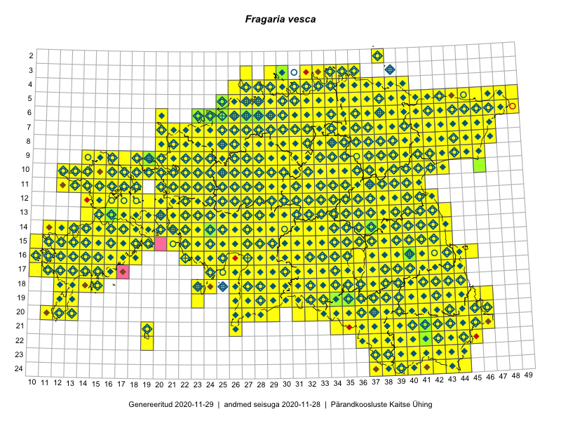

Fragaria vesca
Uuendatud: 2016-12-02
Kaardile koondatud taksonid: Fragaria vesca L.

Kaart põhineb 1521 kirjel, neist vaatlusi 1520 ja eksemplare 1. Taksonit on leitud 522 ruudust.
Kuvatud viited 20 esimesele andmebaasikirjele, ülejäänud PlutoFis
- Malle Leht: 2015-05-22: : ala
- Malle Leht: 2015-05-16: : ala
- Tiit Hallikma, Toomas Kukk, Indrek Tammekänd: 2015-06-09: 12-28: ala
- Malle Leht: 2015-07-09: : ala
- Meeli Mesipuu, Kadri Tali: 2015-04-30: 17-40: ala
- Peedu Saar: 2015-05-09: 13-30: ala
- Peedu Saar, Timo Luhamäe: 2015-05-09: 12-28: ala
- Peedu Saar, Timo Luhamäe: 2015-05-09: 12-29: ala
- Peedu Saar, Timo Luhamäe: 2015-05-10: 12-32: ala
- Peedu Saar, Timo Luhamäe: 2015-05-11: 12-36: ala
- Peedu Saar, Timo Luhamäe: 2015-05-11: 12-37: ala
- Peedu Saar, Timo Luhamäe: 2015-05-12: 07-36: ala
- Peedu Saar: 2015-05-14: 09-43: ala
- Peedu Saar: 2015-05-14: 10-43: ala
- Toomas Kukk, Thea Kull, Timo Luhamäe, Ott Luuk, Peedu Saar: 2015-06-29: 14-17: ala
- Toomas Kukk, Eerik Leibak: 2015-08-09: 13-15: ala
- Peedu Saar, Liina Oja: 2015-05-22: 19-30: ala
- Peedu Saar, Liina Oja: 2015-05-22: 19-29: ala
- Thea Kull: 2015-07-07: 16-40: ala
- Rein Kalamees: 2015-06-08: 05-32: ala